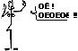

|
|

La telenovel·la de TV3 que pren com a referència Sant Andreu de Palomar
S'emet de dilluns a divendres en horari de sobretaula (s/ les 15.40)
|
SETMANA
40
|
| Capítol
194 (dilluns
25/06/01) Capítol 195 (dimarts 26/06/01) Capítol 196 (dimecres 27/06/01) Capítol 197 (dijous 28/06/01) Capítol 198 (divendres 29/06/01) |
|
.. La delació.- La Clara ni viu ni deixa viure amb la seva dèria per descobrir qui la va delatar. Tots els que l'envolten reben, d'una manera o altra, les conseqüències del desfici de la Clara. El Quim acaba dormint al sofà emprenyat, el Max intenta passar desapercebut per casa, la Paquita no té a qui explicar les seves penes i el Matt ha de fer de bon "jefe" i anar donant hores lliures a la Clara per veure si s'assossega. Pel que fa als possibles culpables, tres d'ells són acusats formalment per la Clara. El Jaume s'autoinculpa per tal d'acabar amb les amenaces de la Clara d'endur-se el Jordi. Després li toca el torn al Jordi que no sap què va fer la nit de la delació perquè portava un pet com el piano que toca la seva filla. Rep un bon mastegot i un "- Tan de bo et moris" de part de la Clara que està absolutament segura que ell és el culpable. Aquesta seguretat li dura el mateix que li han durat les altres: res. Després de parlar amb el seu pare torna a estar absolutament segura de que qui la va delatar va ser la seva germana. Va a casa seva per tal que la Carme confessi i l'únic que aconsegueix és que la Carme es foti l'òstia de la seva vida: volent empenyer la Clara cap a la porta per a fer-la fora, la Carme -que porta sabates obertes del darrera- fa un mal pas i enlloc d'anar endavant va endarrera amb tanta mala fortuna que cau d'esquena i es colpeja el cap al respatller d'una cadira. La Clara es gira i no pot creure que la seva germana estigui a terra de panxa enlaire i, a sobre, inconscient. (Nota de la resumera: a la Carme se li acabarà el "cuento" de la malaltia amb aquesta caiguda, bien!) Estudiar o no estudiar.- l'Ivan no s'acaba d'aclarir tot i que la Natàlia li ha posat ben fàcil: li diu que surt amb un altre xicot i vol trencar la seva relació. La iaia Teresona mira d'engrescar-lo, la Marta li diu que no sigui ruc i no desaprofiti aquesta oportunitat única i fins el Narcís li diu que ha d'anar a estudiar als EEUU. Però l'Ivan, de moment, continua amb el no a la boca. El setè cel.- Aquesta setmana la parelleta baixa a la terra de la mà de la Paquita que ha vist sortir la Marta amb un client d'un "puticlub" i l'Ivan que li acaba dient al David que la Marta ja fa dies que no treballa per a ell. La clau d'entrada a la terra (benvingut!) del David és una pregunta clara i contundent a la Marta: "- D'on treus els "cuartos"???????" La Marta acaba explicant la veritat i el David acaba acceptant els perquès. Li diu que l'estima i l'estimarà SEMPRE (visca la joventut!) i que l'únic que li demana és que no la torni a tocar cap home (que no sigui ell, clar!) |
 |
La família de mar enllà.- La Montse acaba marxant al Marroc amb el Huari tot i les reticencies de la Teresona que segurament va veure per la TV "No sin mi hija" i li diu que el Huari aquí és comporta com els d'aquí, però allà... allà hi ha Alà!!!! Diferents trucades de la Montse al llarg de la setmana confirmen que tots estan bé allà menys la mare del Huari que no es cura ni amb Alà. El matrimoni novell.- La seva relació no va ni amb rodes. La Mari, després d'haver de sentir la disculpa del Santi pel petó de la revetlla que ell qualifica de petó etílic i la gran mocada de la Remei que li canta les quaranta amb frases de l'estil de: "- Mira la marquesa. Sempre queixant-se i és ella qui ha esguerrat la vida del Ramon", fa un increïble esforç d'apropament i acceptació de la vida que ha triat. Massa esforç per a ella i el procés d'adaptació no dura ni un parell de dies. Veure sortir la Raquel i el Santi del ginecòleg acaba amb els seus bons propòsits i, de retruc, amb la paciència del Ramon: bronca al canto! L'estranya parella.- L'Esperança i el Narcís estan disposats a acabar la seva relació "por todo lo alto", faltaria! Se'n van d'acampada al bosc i planten la tenda de campanya (en tots els sentits coneguts). I no una vegada, no... dues!!!! (Nota de la resumera: Chapeau pel tractament de les escenes, per la tendresa i per deixar-nos veure un Narcís-home més enllà de la seva discapacitat) Qui volia un fill?.- La Raquel s'ha quedat embarassada després de fer totes les giragonses del món per aconseguir-ho. Però sembla que aquest nou estat no li prova i vomita cada dos per tres. La Teresona li explica les "delícies" de l'embaràs i la seva conseqüència lògica, el naixement del fill. Això espanta encara més la Raquel que veu com el temps ja no és totalment seu i com el seu projecte madrileny se'n pot ressentir. Per la seva banda, el Santi torna a tenir un revés en la feina i el paper en l'obra de teatre que havia d'interpretar se'n va a fer punyetes. Què farem ara?????? Nosaltres volem un fill.- La Laura i el Marcel es plantegen la possibilitat de tenir un fill tot i la malaltia de la Laura. Parlaran amb el metges per veure què hi poden fer ... a banda del que és habitual en aquests casos, clar. El món està mal repartit, sí senyor!
|
Setmana 40
Capítol 194 · Capítol 195 · Capítol 196 · Capítol 197 · Capítol 198 -
Tornar a Resums Juny 2001
Tornar a Pàgina Resums

Històries Imprevistes
Bl@u

L'equip de la WEB STAP ©
amb l'esplèndida col·laboració dels amics i amigues
€noc, tplana, Koko, Spock, Channing, Sadie, Bl@u, Lubosch, Casablanca i altres 'cardíacs'
procurem cercar la informació, dades, imatges i fer resums,
per tal que els andreuencs, i la resta de catalans (en el sentit més ampli)
coneguem quina imatge es dóna de nosaltres.